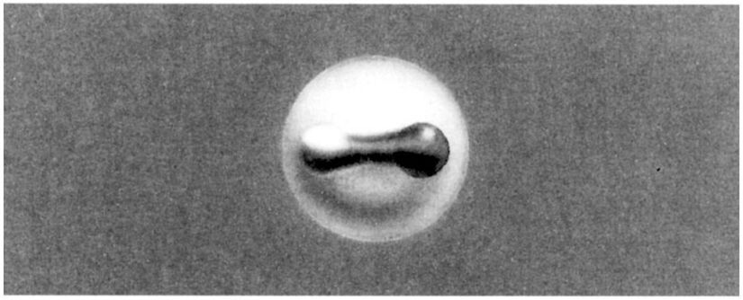
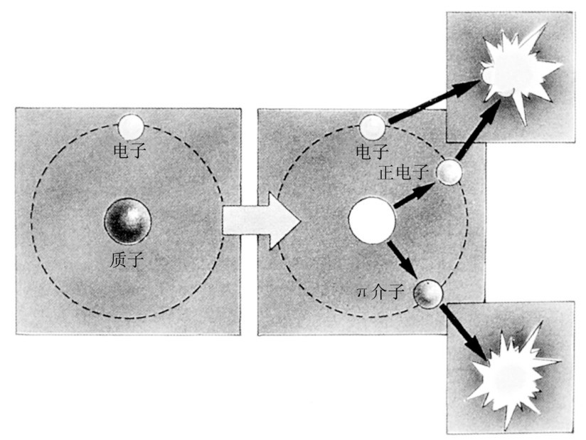
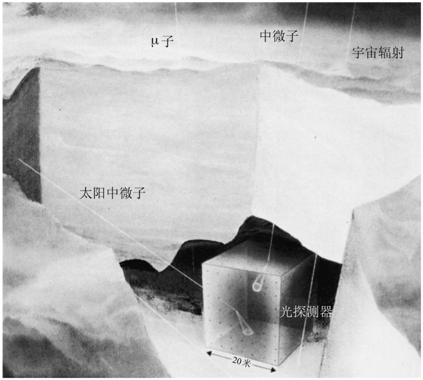
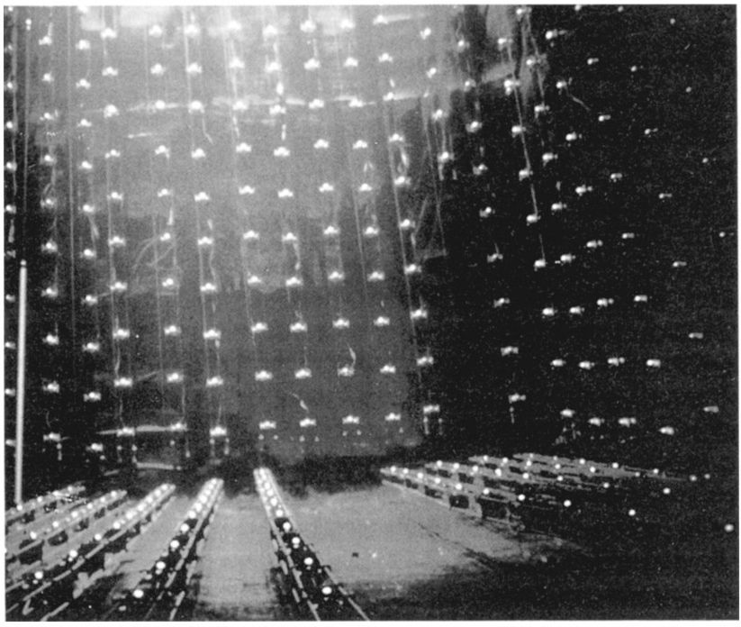

第二十一章
第二十一章物质衰变吗？
第二十一章第二天早晨在我们回到我的办公室之前，我和爱因斯坦及牛顿一起在CERN的自助餐厅吃早餐。没有太多的剩余时间来讨论；那天留出了部分时间给牛顿和爱因斯坦观看实验室正在做的一些主要实验，那是我们在一起分享的最后时光。
牛顿： 昨天我们只是略微谈到了介子。你为什么不多告诉我们一点儿有关那些奇怪物体的信息呢？
哈勒尔： 你们想起了我们对μ子的讨论吗？μ子产生于大气上层，以相对论的速度俯冲到达地球表面。
爱因斯坦： 是的，但是那仅仅因为时间延缓的缘故才做得到。
牛顿： 我怎么能忘掉那些粒子呢？它们加速了我的旧的时空结构的坍缩，应该受到谴责。
哈勒尔： 当我告诉你们说，μ子产生于大气上层来自宇宙线质子与大气原子核的碰撞，是有点不准确的。这些碰撞最先产生的是介子，更准确地说是π介子，π介子穿过空间飞行很短的时间后，几乎马上就衰变为μ子和中微子。
爱因斯坦： 很好，但是这些介子的性质是什么？它们与质子有联系吗？
哈勒尔： 说存在3种π介子就足够了，可由它们的电荷来区分——正的、负的、中性的。它们的质量差不多相等，大约140MeV，这使得它们比μ子重差不多30％。它们由符号π+ 、π- 和π0 来标记。μ子是由带电介子π+ 和π- 衰变产生的，后两者的寿命极短，在10-8 秒的量级，1微秒的百分之一。
牛顿： 那么中性介子怎样衰变呢？
哈勒尔： 中性介子比带电介子存活的时间更短，它们只存活10-16 秒。因此要在实验上确定它们的寿命是极其困难的。实际上，中性介子在它们产生之后立即衰变成两个光子。
爱因斯坦： 像电子偶素衰变那样，在电子偶素衰变中，电子和正电子相互湮没掉了。
哈勒尔： 爱因斯坦，那是个很中肯的见解。人们已经注意到一个中性介子事实上与电子偶素特别相像，是一个物质反物质实体。
牛顿： 你打算告诉我说介子是由电子和正电子组成的吗？如果是这样的话，那么带电介子看起来是什么样子？
哈勒尔： 那并非全然我的意思。但是介子的确由物质和反物质组成。今天，我们知道质子、中子以及由此而来的所有原子核实际上都是由叫做夸克（quark）的更小粒子组成的。比方说，一个质子由三个夸克组成，而一个反质子由三个反夸克组成。
爱因斯坦： 多么奇怪啊！昨天我们看高能粒子碰撞照片的时候，我们看到了很多径迹。但是你告诉我们说所有那些径迹不是质子就是介子。其中怎么没有夸克呢？倘若碰撞以如此高的速度发生，我猜想它们会把一些夸克从原子核中弹出来。
哈勒尔： 至今还没有人在实验室中直接观察到作为单独粒子的夸克。夸克展示出双重行为：在原子核内部它们表现得像正常粒子那样——而在这方面它们是可观测的，只是要间接地去观测。但当我们试图把一个夸克移离它的同伴时，我们总是失败。我们把一个夸克移离另一个夸克越远，将它们束缚在一起的力就越强。因此绝不可能观察到作为单独粒子的夸克，对这一点我们非常有把握。当我说到质子内部作为实体的夸克时，我故意不把它们称做粒子。
牛顿： 现在我明白你说介子其实是一个物质和反物质的态所指的含义了。你是指介子由一个夸克和一个反夸克组成？
哈勒尔： 确实如此。在这个意义上可以把一个介子比作电子偶素，后者也是粒子和反粒子的组合体。但我们还是回到夸克的话题上来。当今关于所有物质的性质的思想都是基于夸克的存在。而且我告诉你们另外一件令人惊奇的事情：存在好几种夸克，而带电介子是由一种夸克和另一种反夸克组成的。这使得某些介子可能携带电荷。不同种类的夸克具有不同电荷，一个介子的电荷只不过是它内部的夸克电荷之和。
中性π介子是由一个同类的夸克—反夸克对组成的。这使得它看起来特别像电子偶素。如果我们把一个电子和一个正电子用相同种类的一个夸克和一个反夸克来替代，我们就得到一个中性介子。这就解释了介子的短寿命——夸克和反夸克仿佛相互追击并相互湮没，而这就是介子产生之后立即发生的事情。

图21.1 一个介子的内在结构，显示出它的组分包括一个夸克和一个反夸克。某些电中性的介子通过夸克—反夸克湮没衰变成光子，类似于电子偶素的电子—正电子湮没。

图21.2 氢原子衰变的一个可能模式的示意图。质子衰变成一个正电子和一个中性介子，后者随即衰变为两个光子。电子和正电子也湮没成两个光子。最后，整个原子转变为电磁辐射能。
爱因斯坦： 所以这是介子的特性。它们是束缚在一起的物质和反物质，一个能量束缚态，而这一能量可以在粒子产生后旋即由它的衰变释放出来。
哈勒尔： 也可以这么说。这使得中性介子成为你的方程的短命的见证人。当中性介子衰变时，它们的全部质量，大约2×10-25 克，都转化为辐射能量。
牛顿： 我们已经讨论了这么多有关不稳定粒子的性质，以至于我都担心质子和原子核或许也是不稳定的。我们怎么知道质子是稳定的呢？在基本粒子物理学中，我们似乎始终在和不稳定粒子打交道，然而原子核却是稳定的，这不奇怪吗？
哈勒尔： 这是个很重要的观点。今天我们相信我们体内和我们周围的物质产生于大约150亿年前的大爆炸。自然界似乎存在一条严格的规则：无论什么，它能产生也就能衰变。生与死是密切相关的。如果核物质是在某时某地产生的，它也会衰变。因此有人设想连质子最终也不稳定，而且经过一定的时间也将衰变。
爱因斯坦： 那么质子会怎样衰变呢？
哈勒尔： 一个有意思的可能性，其实也是最简单的可能性，是衰变成一个正电子——它在某种程度接收了质子的电荷——和一个中性介子。当然了，这个介子会立即衰变成两个光子。
牛顿： 一个正电子从质子衰变中出现了！以氢为例，那么：当它的质子发生衰变并放出一个正电子时，这个正电子后来会同氢原子壳层上的电子碰撞。而那将导致电子和正电子湮没成两个光子。爱因斯坦，现在注意了：整个氢原子分解为4个光子——纯辐射能量。这是你的公式的另一个应用！
爱因斯坦： 哈勒尔，对不起，但是我真的无法接受这一点。如果质子一定会衰变，我们有一个更严重的问题要回答：为什么还有质子留在这个世界上？它们为什么没有全部衰变掉？为什么我们生存在这儿？
哈勒尔： 我只能想出一个答案：质子有很长的寿命。有一些相当明确的理论暗示质子的平均寿命为1033 年，即大约10亿亿亿亿年。
牛顿： 那无法想象。这意味着永远观测不到质子衰变吗？
哈勒尔： 不，那可不一定。我提到的数字只是质子的平均寿命。如果你想要观测质子衰变，即使质子寿命那么长，你所要做的不过是考虑足够大数量的质子。倘若我们仔细监测几千吨的水，我们一年之内应该能够探测到几十个质子衰变。实际上诸如此类的实验已经在世界各地做了——通常采用地下深处的竖矿井，在那里可以屏蔽掉宇宙辐射。
到目前为止，连一个质子衰变的事例都没有观测到，但是与此同时，有关研究已经为质子寿命设定了一个可观的下限：至少1031 年。换句话说，爱因斯坦你可以放心了，物质果真发生衰变的话——没有几个严肃的粒子物理学家怀疑它的确会衰变——衰变过程也会以如此低的速率进行，以至于没有任何理由惊慌失措。物质似乎衰变得非常非常慢。

图21.3 用于寻找质子衰变和其他稀有过程的粒子探测器的图示。在俄亥俄州克利夫兰附近莫顿盐矿里面建有一个这样的探测器。大约10 000吨的水注满一个立方体容器，其中含有大约1033 个质子。这些质子中的每一个在数年的观测过程中都有微小的机会在某一时刻衰变。在衰变过程发生期间，预料随之产生的带电粒子会发出蓝光，称做切连科夫辐射［以俄罗斯物理学家切连科夫（P. A. Cerenkov）命名］。这一辐射将会在水箱边缘被光敏探测器记录下来。这类探测器虽然被安装在地下深处，它们也不能完全避免来自宇宙辐射的背景信号。中微子和某些高能μ子可以穿透仪器上方所有物质的防护层，而且可以在敏感区域产生反应。这些背景反应的一部分也许是由太阳中微子造成的。［承蒙GEO杂志/屈恩（Joerg Kühn）惠允。］
爱因斯坦： 尽管如此，如果你是对的，我们就能够轻易地预言我们的世界在某个遥远未来的命运：所有的物质都将转化为辐射。我那关于能量和质量等价性的方程将决定我们这个世界的终结。在那遥远的将来，我们的宇宙只会成为一个无数光子的海洋，没有星星，没有星系。没有任何东西显示先前宇宙的林林总总，也没有任何东西证明像我们这样的有能力认识支配宇宙的动力学的重要性质的物种曾经存在过。所剩余的一切就是空间、时间和能量。四周没有任何东西为我们作证……
牛顿： 可是，先生们，即使这种事竟然会发生，那也只会发生在遥远的将来！
间断了一会儿，使过去几分钟的激动平息下来之后，牛顿又有话说了。
牛顿： 几天前当我们开始这些讨论的时候，我们是从空间和时间入手的。紧接着，有了光速不变的问题，这个问题被爱因斯坦完美地解决了。然后我们逐步讨论下去，自然而然地一环套一环。我们现在到了讨论物质分解为辐射的地方——我们的宇宙最终灭亡之处。爱因斯坦，就是你的方程在作怪——它不仅为大爆炸中的物质产生充当助产士，而且为所有物质在将来某一天的灭绝推波助澜。
哈勒尔，我们第一次在剑桥相逢的时候，我们所考虑的只是简明扼要地讨论一下相对论。如今我们已经马不停蹄地讨论了好几天，我们讨论得越多，我就越体会到新思想层出不穷。
在我的时代，当我在剑桥写《原理》一书时，我时常好奇自然科学会发展成什么样子。我曾想到的是一个封闭的知识体系，能够解释在我们周围所看到的一切。今天回想起来，我承认我当时沉湎于错觉中了。我根本不能想象自然科学——我毕竟是她的一个创始人——会以这种方式发展；我从未指望自然科学有一天会像今天的物理学那样变得妙趣横生。当我把我的最美好祝愿送给你和你的同事们时，我相信我也可以代表我的同事爱因斯坦来讲这些话。

图21.4 安放在俄亥俄州克利夫兰附近莫顿盐矿里面的粒子探测器的内视图。容器注满了特别纯净的水。可以从这个水箱的外墙通过光电倍增管观测到粒子的相互作用，光电倍增管的效用与光电池类似。
1987年，这个探测器记录到起源于大麦哲伦星云的超新星爆炸所造成的强烈中微子脉冲。在日本，一个类似的实验装置，叫做神冈探测器，也记录了这一事件。
我们沿着CERN的通道走下来，走向我的一个同事的办公室，他已经答应为我们的参观者演示几个实验装置。我打算悄悄溜出去打电话安排我们的离开事宜——一辆出租车把爱因斯坦载到火车站，在那儿他可以坐火车去伯尔尼；另一辆出租车把牛顿送到机场。所以我赶紧回到我的办公室……